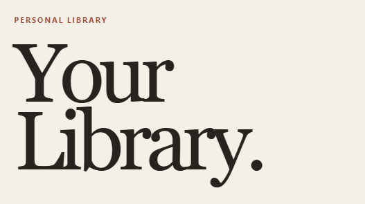
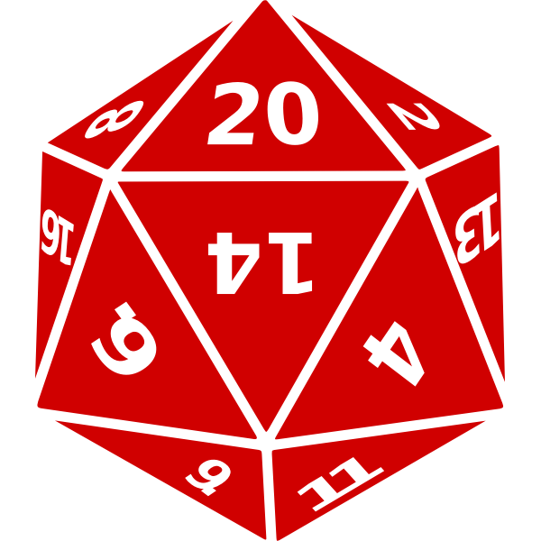
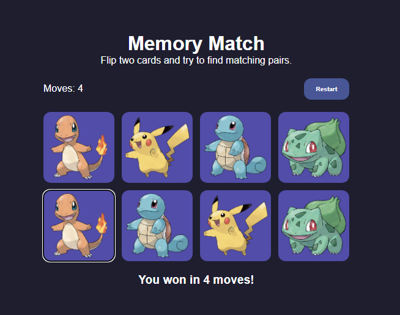

Languages & Frontend
JavaScript • Java • SQL • HTML • CSS • SCSS
Building full-stack applications, REST APIs and database-driven projects, and looking for junior software engineering roles in London.
View My Projects
I’m a junior software developer with a background in biological science and data analysis. After completing my Biological Sciences degree at the Royal Veterinary College, I trained in full-stack software development with _nology. I have experience building applications with JavaScript, Java, Spring Boot, Node.js and SQL, as well as REST APIs, relational databases and automated testing. I enjoy solving problems and creating applications that are intuitive, accessible and useful.
Technologies I have used in training and project work:
JavaScript • Java • SQL • HTML • CSS • SCSS
Spring Boot • Node.js • Hapi • REST APIs
PostgreSQL • MySQL • Prisma • JPA/Hibernate
Jest • Vitest • Git • GitHub • Postman

JavaScript • Node.js • Hapi • PostgreSQL • Prisma • Jest
A full-stack application for managing and tracking books, featuring RESTful CRUD functionality, database integration and automated unit testing.

Java • Spring Boot • MySQL • REST APIs • JavaScript
A full-stack character creation application developed in a five-person team. I focused on backend CRUD functionality and connecting element data to character creation.

JavaScript • HTML • SCSS
An interactive browser game with card-matching logic, a move counter, restart functionality and a clear win state.